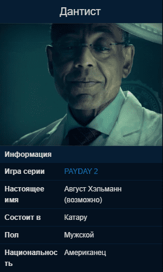

Дантист
Один из нанимателей команды. О Дантисте практически ничего не известно. Он может навести справки о любом члене команды, лично общается с Далласом, хотя не пользуется Crime.Net, что говорит о наличии множества связей по всему криминальному миру Вашингтона.
Описание

Впервые появляется в трейлере "The Dentist". О Дантисте практически ничего не известно. Он может навести справки о любом члене команды, лично общается с Далласом, хотя не пользуется Crime.Net, что говорит о наличии множества связей по всему криминальному миру Вашингтона.
При разговоре Дантиста с Далласом тот упоминает, что знает о первом Хокстоне и называет объекты остальных ограблений. Из его фразы "каково было его бросить", можно понять, что Дантист имеет наидетальнейшую информацию обо всём, что происходило с командой.
Является одним из самых влиятельных людей в Вашингтоне, поскольку из всех известных команде людей, только Дантист был способен сбыть Бриллиант.
Именно благодаря ему команде доступна функция предварительного планирования таких ограблений как Большой банк и Теневой рейд.
Первое зарегистрированное упоминание о нём было умирающим дыханием Джеймса "Напалма" Вестмора, когда его банда Beltway Bunch напала на Большой банк в 1977. "Скажите Дантисту пусть идёт к чёрту" - конец цитаты.
Во время ограбления Henry's Rock выяснилось, что является одним из людей Murkywater.
Во время спасения Бэйна насмехался над бандой через громкоговоритель.
В альтернативной концовке Ограбления Белого Дома угрожает убить Бэйна и Лока, однако банде удается убить Дантиста быстрее.
Является одним из трёх новых "королей" Катару, "Доктором", остальные двое: Слон и Гектор.
Заказывает ограбления
- Большой банк
- Hotline Miami
- Спасение Хокстона
- Бриллиант
- Месть Хокстона
- Казино Golden Grin